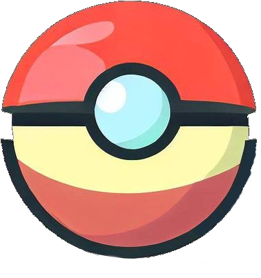

<mat-toolbar color="primary">
  <div class="homeButton">
    
    <span (click)="home()">Draftmon: Catch'Em Six!</span>
  </div>
  <div class="toolbar-icons">
    <button mat-icon-button>
      <mat-icon>question_mark</mat-icon>
    </button>
    <!-- <button mat-icon-button>
      <mat-icon>coffee</mat-icon>
    </button> -->
  </div>
</mat-toolbar>
